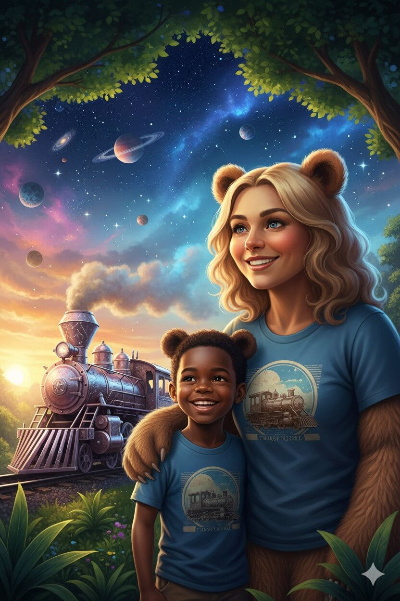
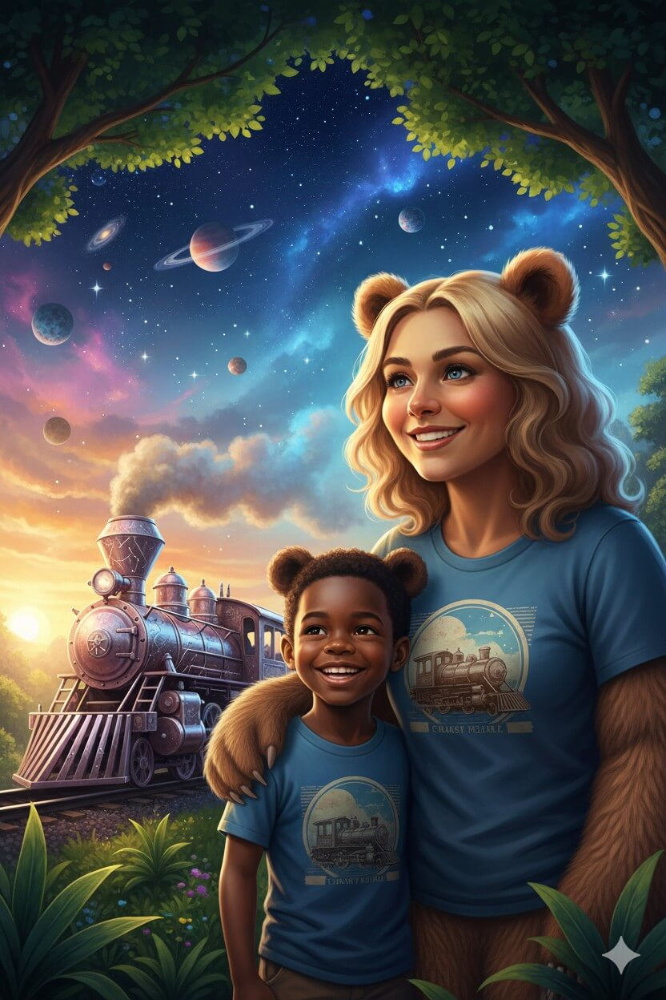

Heidi Kalske-Akintobi
AI Innovation • Child Advocacy • Trauma-Informed Tech
| Category | Mission | Tech |
|---|---|---|
| Photini™ apps | Advocacy & case documentation | Go-Driver • Evidence management • AI compliance |
| Rhea Network™ & Rhea apps | Healing & trauma research | Data science • Trauma-informed AI • Evidence synthesis |
| Nektarios™ | Governance & AI ethics | ISO frameworks • ERP • Compliance-by-design |
Quality, trust, and data integrity with AI hand-in-hand with humans; misinformation is more dangerous than responsible data sharing.
Photini's Go-Driver an AI-powered co-pilot for NGOs, lawyers, and grassroots defenders—designed to amplify their impact while protecting the people they serve. It transforms how advocates protect vulnerable populations by turning scattered evidence and manual processes into a secure, AI-augmented system that never forgets, always, and puts victims in control.
Go-Driver is designed to solve the crisis of evidence fragmentation and accountability gaps in human rights work. It consolidates case files, maintains immutable audit trails, and provides AI recommendations—always with mandatory human review. It is a compliance-first command center for advocates who can't afford to lose a single piece of evidence or make a single privacy mistake, an aid kit that combines international case law, latest research and your case evidence into one clear information package.
Go-Driver pioneers Compliance-by-Design architecture—where ethics aren't bolted on after development, but embedded in the database schema, API logic, and AI workflows from day one from the ground up. Where it is build on:
It empowers advocates with AI-powered case management, evidence synthesis, and workflow automation—while ensuring every decision is traceable, every access is logged, and every vulnerable person's data and rights are protected.


 

| Period | Role | Org | Focus |
|---|---|---|---|
| 2015-2025 | Asst. Manager, Audit, Risk & Compliance | KPMG Finland | Services Public & Private Sector Audit • GDPR • IT • ESG |
| 2010-2015 | Financial Consultant, Accountant, Buyer | Accountor, Pohjola Insurance, Nokia | Accounting • Banking • Insurance • Telco |
| 2025-Present | Founder & CEO | Photini Family™ | AI Ethics • Child Advocacy • Tech Innovation |
“Every child deserves a world where technology protects them, stories heal them, and networks unite them with those they love—no matter the distance.”